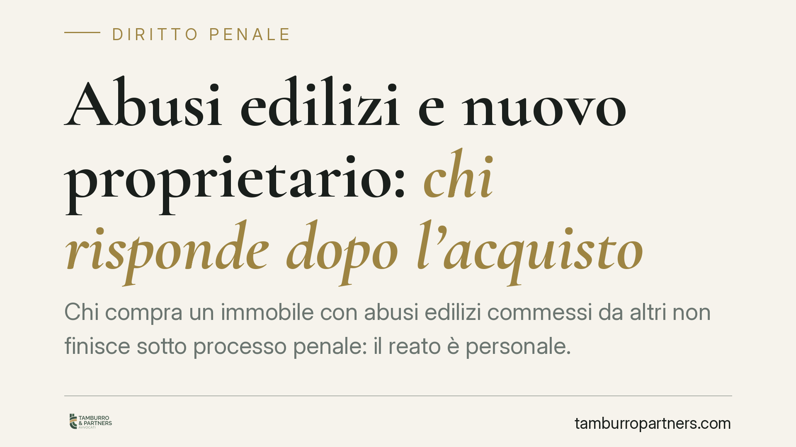

Abusi edilizi e nuovo proprietario: chi risponde dopo l'acquisto
Chi compra un immobile con abusi edilizi commessi da altri non finisce sotto processo penale: il reato è personale. Ma la demolizione e il ripristino seguono il bene e colpiscono anche il nuovo proprietario. Un principio ribadito dalla Cassazione e valido pure per chi acquista all'asta giudiziaria. Vediamo come proteggersi.

Il caso e perché conta
Acquistare un immobile significa, talvolta, ereditarne anche i problemi. Tra i più insidiosi ci sono gli abusi edilizi commessi dal precedente proprietario: una veranda non autorizzata, un soppalco mai sanato, una difformità rispetto al titolo edilizio.
La domanda ricorrente è semplice: il nuovo proprietario ne risponde? La risposta richiede una distinzione netta tra due piani, spesso confusi: la responsabilità penale e le conseguenze urbanistiche. Sono due binari diversi, con regole diverse.
Inquadramento normativo
La materia è regolata dal DPR 380/2001 (Testo Unico Edilizia). Il reato edilizio – ad esempio la costruzione senza permesso di costruire (art. 44) – è un illecito personale: punisce chi ha materialmente eseguito o commissionato l'opera abusiva. Chi acquista un bene già abusivo, restando del tutto estraneo alla realizzazione dell'opera, non commette il reato e non può esserne chiamato a rispondere penalmente.
La Cassazione Penale, Sez. III (orientamento ribadito nel 2025) conferma questo principio: la responsabilità penale non si trasferisce con la proprietà. L'acquirente in buona fede, che non ha partecipato all'abuso, non risponde del reato commesso dal venditore.
Altro discorso vale per le sanzioni urbanistiche. L'ordine di demolizione e il ripristino dello stato dei luoghi non hanno natura penale punitiva: sono misure reali, cioè legate al bene. Seguono l'immobile come un'ombra e possono essere notificate anche al nuovo proprietario, pur estraneo all'abuso. Il Comune, infatti, ha interesse a rimuovere l'illecito a prescindere da chi lo abbia commesso.
Implicazioni pratiche
Cosa significa, in concreto, per chi compra?
Sul piano penale, l'acquirente incolpevole può stare tranquillo: non finisce sotto processo per un abuso che non ha realizzato.
Sul piano urbanistico, invece, il rischio è reale. Se il Comune emette un'ordinanza di demolizione, il destinatario può essere il proprietario attuale, anche se ha scoperto l'abuso solo dopo il rogito. In caso di inerzia, l'amministrazione può procedere alla demolizione d'ufficio con addebito dei costi, fino all'acquisizione gratuita del bene al patrimonio comunale.
Resta la tutela del diritto di rivalsa: il proprietario incolpevole che subisce la demolizione può agire contro il venditore per il risarcimento del danno, soprattutto se l'abuso era stato taciuto o garantito come inesistente.
### E l'acquisto all'asta?
Il principio non cambia per l'aggiudicatario di un'asta giudiziaria. Chi compra all'asta non subisce conseguenze penali per gli abusi pregressi, ma eredita comunque le conseguenze urbanistiche legate al bene. Attenzione: nelle vendite forzate le tutele contrattuali tipiche della compravendita (garanzie, dichiarazioni del venditore) sono fortemente ridotte. La verifica preventiva diventa quindi ancora più decisiva, perché il margine di rivalsa è spesso minimo.
Cosa fare in concreto
- Richiedi la documentazione completa prima dell'acquisto: titoli edilizi, concessioni, permessi, eventuali pratiche di sanatoria o condono. Confronta i documenti con lo stato reale dell'immobile.
- Commissiona una verifica di conformità urbanistica e catastale a un tecnico abilitato: un sopralluogo può far emergere difformità invisibili sulla carta.
- Inserisci in contratto dichiarazioni e garanzie espresse del venditore sulla regolarità edilizia, così da rafforzare la futura azione di rivalsa in caso di contestazioni.
- Nell'asta, leggi con attenzione la perizia di stima e la documentazione allegata alla procedura: segnala per tempo ogni anomalia e valuta i costi potenziali di sanatoria o demolizione prima di offrire.
- Verifica la sanabilità dell'abuso: non tutte le difformità sono regolarizzabili. Consigliamo di quantificare in anticipo tempi e costi di un'eventuale sanatoria, perché incidono sul reale valore del bene.
La distinzione tra responsabilità penale e conseguenze urbanistiche è la chiave per non commettere errori di valutazione. Il reato resta del venditore; il problema pratico, molto spesso, finisce sul tavolo di chi compra.
---
*Contributo informativo a cura di Tamburro & Partners - Avv. Giuseppe Tamburro. Non costituisce parere legale.*
Ogni condominio ha una storia a sé.
Se gestisci un'amministrazione e vuoi un confronto su una specifica questione condominiale, scrivi allo studio. Ti rispondiamo entro un giorno lavorativo.